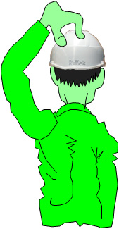

 … en razón de sus conocimientos y experiencia profesional, así como por tener la formación adecuada en prevención de riesgos laborales y haber realizado un curso que le capacita para el desempeño de
Esta designación no comporta función o responsabilidad alguna que no formase parte ya de sus funciones, sino que viene a fortalecer el compromiso que como profesional de Iberdrola ha de tener con la prevención de riesgos en todas sus actividades, así como en la de las personas que de Vd. puedan depender, colaborando y coordinándose con otros compañeros en aquellas situaciones que así lo precisasen.funciones de nivel básico en dicho campo, consideramos que Vd. puede colaborar de forma activa y eficaz en la prevención de riesgos laborales dentro de su ámbito de actuación; por lo tanto, de acuerdo con lo previsto en el artículo cuarto de la Ley 54/2003, de 12 de Diciembre, se le designa a Vd. “recurso preventivo”